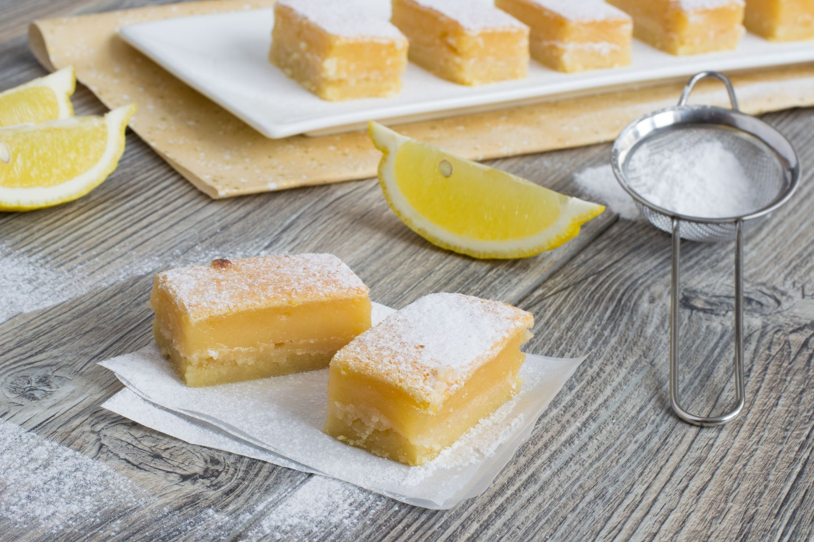

Prajitura inteligenta cu lamaie

- Preincalzeste cuptorul la 160° si unge cu unt o tava patrata de 20/20 cm sau una rotunda. Alege o tava nu foarte mare ca latime sau lungime, deoarece daca nu este suficient de inalt aluatul in tava, exista riscul sa nu se poata stratifica.
- Separa albusurile de galbenusuri si bate albusurile spuma, pana cand aceasta ramane pe paletele mixerului, atunci cand il ridici.
- Freaca galbenusurile cu zaharul pana obtii o consistenta cremoasa si usoara. Adauga untul si esenta de vanilie, amesteca pentru 1-2 minute, apoi adauga si incorporeaza faina.
- Adauga zeama si coaja de lamaie, apoi adauga laptele treptat, pana la omogenizare, urmat de albusurile batute.
- Albusurile trebuie amestecate cu o spatula, nu cu mixerul, si trebuie adaugate tot treptat, cat mai delicat.
- Nu trebuie sa omogenizezi aluatul, albusul trebuie sa ramana oarecum vizibil in compozitie, deci incorporeaza albusurile superficial.
- Toarna aluatul in tava de prajitura si da-o la cuptor pentru aproximativ o ora, sau pana ce se coloreaza auriu, iar prajitura trece testul scobitorii.
- Decoreaza prajitura cu zahar pudra.